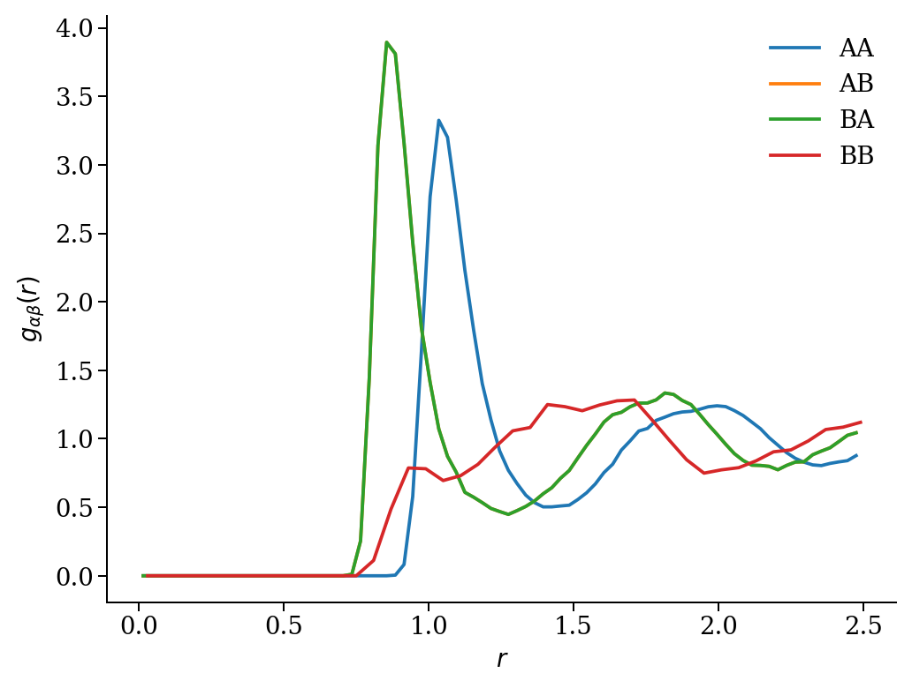
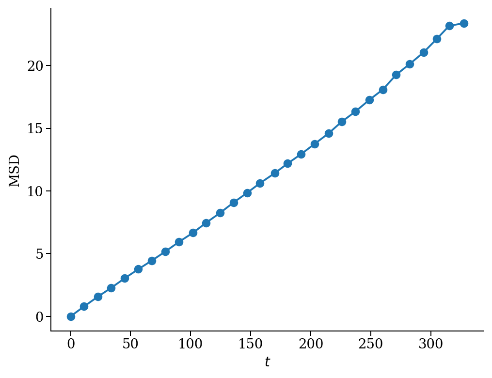
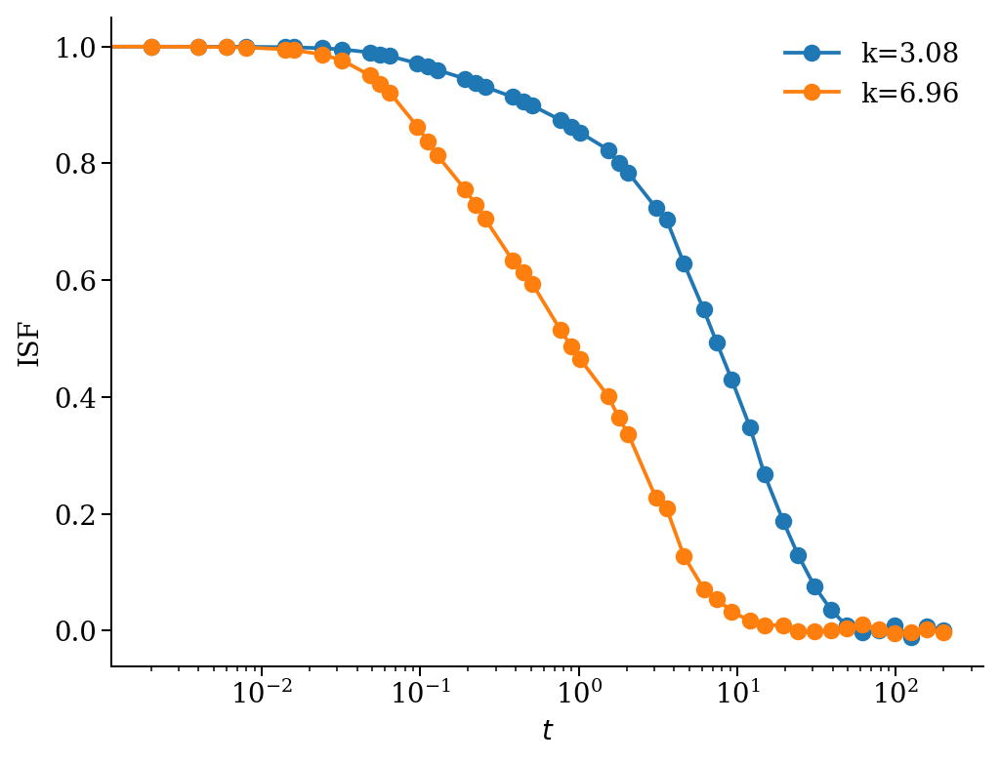

Atooms: postprocessing
Table of Contents
In this notebook, we are going to show how to perform standard analysis of molecular dynamics trajectories using the atooms package and its postprocessing component. You can install postprocessing from pypi: pip install atooms-pp.
1 Setup
We start by loading common libraries for plotting and path handling
import matplotlib.pyplot as pl import sys
We then import the postprocessing package and the trajectory class from atooms. In this particular case, we will read a trajectory file in XYZ format, so we load the TrajectoryXYZ class
import atooms.postprocessing as pp from atooms.trajectory import TrajectoryXYZ
We consider a sa mple trajectory, which can be download from the repository of the postprocessing package itself. Let's store the path to this file in a variable for later convenience
from atooms.core.utils import download download('https://framagit.org/atooms/postprocessing/raw/master/data/kalj-small.xyz', "/tmp") path = '/tmp/kalj-small.xyz'
2 Handling a trajectory
A trajectory is an object with many properties. To load a trajectory, we create an instance of the class as follows
th = TrajectoryXYZ(path)
The trajectory is a list-like object, in the sense that it can be iterated up and sliced. Each frame of the trajectory contains a System object, which is a full configration of the system at a given instant of time during the simulation. Here we print the first, the 10th and the last frame
th[0], th[10], th[-1]
(<atooms.system.system.System object at 0x7f2b75818dc0>, <atooms.system.system.System object at 0x7f2b75825790>, <atooms.system.system.System object at 0x7f2b75775160>)
To know how many frames we have
len(th)
101
To clarify: a slice is a list of frames, not a trajectory
th[10: 12]
[<atooms.system.system.System object at 0x7f2b75813e50>, <atooms.system.system.System object at 0x7f2b75820850>]
Note: it is actually possible to define a slice of a trajectory as a trajectory by using the Sliced class decorator, see below.
If the trajectory contains metadata, these can be retrieved directly:
from pprint import pprint print("Timestep during the trajectory:", th.timestep) print("Steps corresponding to the 3rd frame:", th.steps[2]) print("Additional metadata:") pprint(th.metadata)
Timestep during the trajectory: 0.001
Steps corresponding to the 3rd frame: 2000
Additional metadata:
{'cell': [5.0, 5.0, 5.0],
'columns': ['name', 'pos'],
'dt': 0.001,
'ndim': 3,
'npart': 150,
'step': 0}
3 Analysis of the trajectory
Now that we have constructed a trajectory object, we can proceed to the analysis. We are going to consider two main aspects of the analysis:
- structural correlations
- dynamical correlations
3.1 Structural correlations
3.1.1 Radial distribution function
The radial distribution function \(g(r)\) describes how the local density varies as a function of the distance from a reference particle. In liquids, one normally averages over all particles, obtaining a descriptor of the probability to find a second particle a distance \(r\) from a given particle, relative to that of the ideal gas.
For \(N\) particles of the same type at density \(\rho\) it is
\[g(r)=\frac{1}{N\rho}\left\langle\sum_i^{N}\sum_{i\neq j}\delta(r-|\mathbf{r}_i-\mathbf{r}_j|)\right\rangle\].
Notice that the average number of particles with a distance \(R\), i.e. the average coordination number \(n(R)\), can be computed from the radial distribution function via integration in spherical coordinates (for 3D systems)
\[n(R)=4\pi \rho\int_0^R g(r)r^2 dr\]
In postprocessing the radial distribution function is a Correlation object that acts on a trajectory. In order to compute it, we simply construct the object, specifying some parameters, and then run the calculation with the do() method
gr = pp.RadialDistributionFunction(th, norigins=5, dr=0.04)
gr.do()
Once the calculation is performed, the radial distribution object gr contains (like all correlators in postprocessing) two arrays:
- the
gridarray contains the independent variable (or variables), binned according to our input parameters (in this case, the smallest space interval that we resolve,dr) - the
valuearray contains the actual value of the computation, in this case the values of \(g(r)\)
We can directly plot the results with
pl.plot(gr.grid, gr.value) pl.xlabel("r") pl.ylabel("g(r)")

As we can see, the function displays two narrow peaks around \(r=1\) and a broader peak further away. The presence of several peaks is due to the fact that the system actually contains two types of particles, noted \(A\) and \(B\).
We can compute separate distribution functions for the \(A\) and \(B\) particles and also the cross distribution funtion for the probability to find a particle \(B\) at distance \(r\) from particle \(A\) using the Partial class:
gr = pp.Partial(pp.RadialDistributionFunction, species=['A', 'B'], trajectory=th, norigins=100) gr.do()
In this case, the result contains a dictionary gr.partial:
from pprint import pprint pprint(gr.partial)
{('A', 'A'): <atooms.postprocessing.gr.RadialDistributionFunctionFast object at 0x7f7cbce85af0>,
('A', 'B'): <atooms.postprocessing.gr.RadialDistributionFunctionFast object at 0x7f7cbcea0f10>,
('B', 'A'): <atooms.postprocessing.gr.RadialDistributionFunctionFast object at 0x7f7cbcea08b0>,
('B', 'B'): <atooms.postprocessing.gr.RadialDistributionFunctionFast object at 0x7f7cbcea0460>}
We can treat the result as any normal dictionary:
for key,g in gr.partial.items(): pl.plot(g.grid, g.value, label=str("".join(key))) pl.legend() pl.xlabel("r") pl.ylabel(r"$g_{\alpha\beta}(r)$")

Sometimes, it is useful to analyse only sections of a trajectory. To this purpose, one can slice the trajectory using atooms and analyse individual frames or subsets of frames.
from atooms import trajectory t = trajectory.Sliced(th, slice(-1, len(th))) # analyse only the last frame gr = pp.RadialDistributionFunction(t, dr=0.04) gr.do() pl.plot(gr.grid, gr.value) pl.xlabel("r") pl.ylabel("g(r)") # notice that the g(r) is more noisy

3.2 Dynamical correlations
3.2.1 Mean square displacement
A very similar kind of anaysis can be performed on dynamical quantities, which quantify correlations in time.
The most elementary of such quantities is the mean squared displacement (MSD). This is defined as
\[ \delta r^2(t)= \langle |\mathbf{r}(t-t_0) - \mathbf{r}(t_0)|^2\rangle\]
The average is normally perfomed over all the \(N\) particles and over multiple values for the origin of time \(t_0\).
The analysis process is now familiar. First we construct the msd object and then perform the calculation with do().
msd = pp.MeanSquareDisplacement(th)
msd.do()
pl.loglog(msd.grid, msd.value, 'o') pl.xlabel("t") pl.ylabel("MSD(t)");

Again, we can compute partial mean square displacements using the Partial class
msds = pp.Partial(pp.MeanSquareDisplacement, species=['A','B'], trajectory=th, norigins=100) msds.do() pl.loglog(msds.partial['A'].grid, msds.partial['A'].value, 'o') pl.loglog(msds.partial['B'].grid, msds.partial['B'].value, 'o') pl.xlabel("t") pl.ylabel("MSD(t)")

3.2.2 Self intermediate scattering function
We compute the self part of the intermediate scattering function (ISF) at specific wave-vectors using a logarithmic time grid.
from math import pi import numpy tgrid = [0] + list(numpy.logspace(0, 3, base=10)) # we must include t=0 isf = pp.Partial(pp.SelfIntermediateScattering, species=["A"], trajectory=th, kgrid=[2*pi, 2.5*pi], nk=1, tgrid=tgrid) isf.do()
To get some info on the parameters passed to compute the ISF, have a look at the help for the base class with help(pp.fourierspace.FourierSpaceCorrelation)
The ISF decays to zero at long times, as it should in an ergodic liquid.
pl.semilogx(isf.partial['A'].grid[1], isf.partial['A'].value[0], '-o') pl.xlabel('t') pl.ylabel('ISF')

3.3 More correlation functions
Here is the full list of correlation functions currently available in postprocessing, along with the corresponding classes:
import inspect import atooms.postprocessing as pp for cls in inspect.getmembers(pp, inspect.isclass): if issubclass(cls[1], pp.Correlation) \ and cls[1] is not pp.Correlation \ and not 'Fast' in cls[0] \ and not 'Legacy' in cls[0] \ and not 'Optimized' in cls[0] \ and not 'Susceptibility' == cls[0]: print('- `{}`: {}'.format(cls[0], cls[1].long_name))
- `BondAngleDistribution`: bond angle distribution - `Chi4SelfOverlap`: dynamic susceptibility of self overlap - `CollectiveOverlap`: collective overlap - `IntermediateScattering`: intermediate scattering function - `MeanSquareDisplacement`: mean square displacement - `NonGaussianParameter`: non-Gaussian parameter - `RadialDistributionFunction`: radial distribution function - `S4ktOverlap`: 4-point dynamic structure factor from self overlap - `SelfIntermediateScattering`: self intermediate scattering function - `SelfOverlap`: self overlap - `SpectralDensity`: spectral density - `StructureFactor`: structure factor - `VelocityAutocorrelation`: velocity autocorrelation
Some of them have multiple implementations (ex. Fast and Legacy), which are picked at runtime depending on your platform. The fastest implementation will be automatically picked up, if possible.
4 Writing your own correlation function
We can extend the correlation class to compute additional correlation functions. The particle coordinates are loaded into the _pos instance variable as a list of numpy arrays. Each numpy array is a (ndim, npart) representation of the full particles' coordinates in a given frame of the trajectory. This is a gist of a new correlation class.
from collections import defaultdict import numpy def some_function(x, pos): return 0.0 class NewCorrelation(pp.correlation.Correlation): def __init__(self, trajectory, grid): pp.correlation.Correlation.__init__(self, trajectory, grid) self.phasespace = ["pos"] def _compute(self): print("Computing new correlation") raw = defaultdict(list) for i in range(len(self._pos)): for x in self.grid: raw[x].append(some_function(x, self._pos[i])) self.value = [numpy.mean(raw[x]) for x in raw]
nw = NewCorrelation(th, [0.0, 1.0]) nw.compute() print(nw.value)
Computing new correlation [0.0, 0.0]